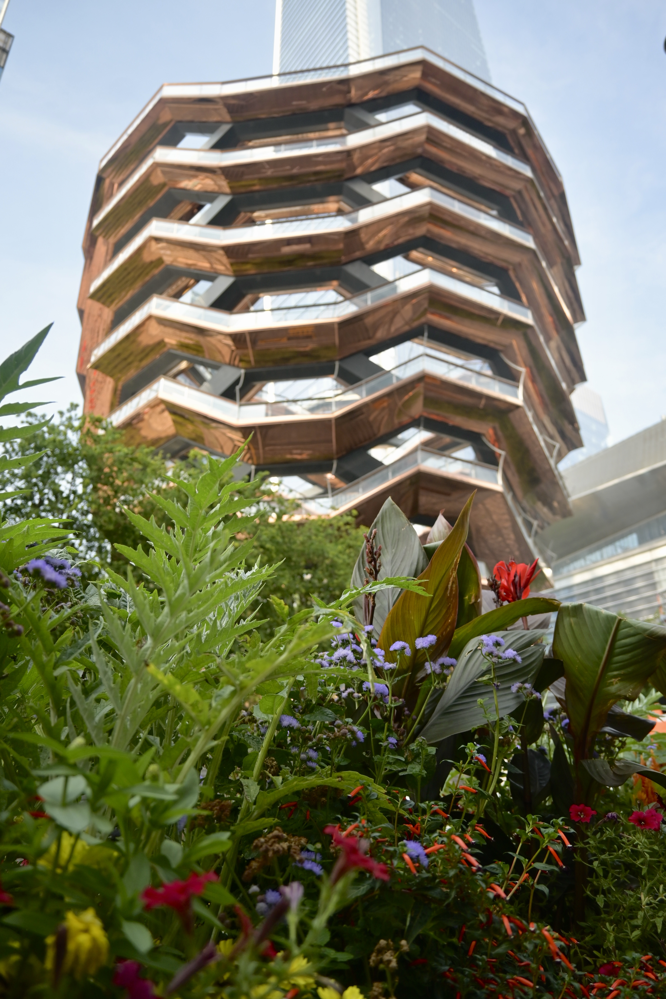
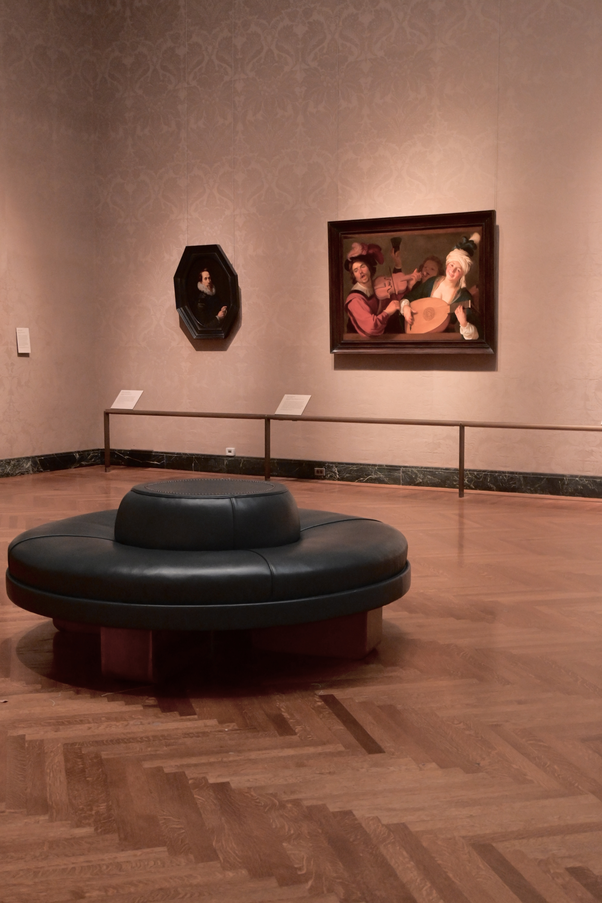

When I was 10, I was intrigued by architecture and city layouts. So I started to take pictures of buildings and views that I found entrancing or interesting with my iPhone. As I began to travel, I learned more about composition, color, patterns, light and shadow, and negative space. I would volunteer with my town’s local TV station and help film and do the videography of local programs and events. This taught me more about picture in motion, but there was still a lesson for me to learn about the underlying principle of getting good angles to focus on a subject or object of interest. Finally, when I was 17, my father gifted me a Nikon digital camera, and I began to heavily play around with it and meticulously watch Youtube videos to learn how cameras function. I learned a lot more about the important components of aperture, ISO, and shutter speed. Although it took a a long while, I would say that I have learnt the basics and continue to learn more about photography through shooting and speaking with other photographers. My main photography focuses are street, nature, and landscape photography. Right now, I am learning more about the after-process of shooting and how to edit my photos on Lightroom and other platforms to enhance the artistic aspect I want out of a photo. The first image was taken at The Vessel in New York City and the second image was taken at the MFA in Boston.
 